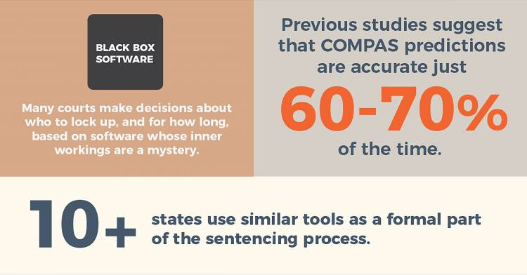

Sesgos Algorítmicos: El uso de Compas en el Sistemas de Justicia de EEUU#
Pregunta para reflexionar
Introducción#
Tipos de Sesgos:#
Sesgo en los datos de entrenamiento
Datos históricos que reflejan discriminación pasada
Falta de representación de ciertos grupos
Sesgo en el diseño del algoritmo
Decisiones de programación que favorecen ciertos resultados
Métricas de éxito mal definidas
Sesgo en la interpretación
Cómo se usan y se interpretan los resultados de la IA
Caso Histórico: COMPAS y el Sistema de Justicia en EE.UU.#
¿Qué es COMPAS?#
Lo usa para:
Decidir fianzas
Determinar sentencias
Evaluar libertad condicional
El Problema Descubierto#
En 2016, una investigación de ProPublica reveló que COMPAS era racialmente sesgado:
Hallazgos claves:
Personas afroamericanas tenían casi el doble de probabilidad de ser incorrectamente clasificadas como “alto riesgo” de reincidencia
Personas blancas tenían más probabilidad de ser clasificadas como “bajo riesgo” incluso cuando sí reincidían
La precisión general era solo del 61% (similar a lanzar una moneda)

Datos Concretos:#
Grupo |
Falsamente clasificados como “Alto Riesgo” |
Falsamente clasificados como “Bajo Riesgo” |
|---|---|---|
Afroamericanos |
45% |
23% |
Blancos |
23% |
48% |
¿Por qué ocurrió esto?#
Arrestos desproporcionados de minorías
Sentencias más duras para personas afroamericanas
Mayor vigilancia en vecindarios de bajos recursos
La IA aprendió estos patrones y los perpetuó.
Otros Ejemplos de Sesgos Algorítmicos#
1. Reconocimiento Facial#
Problema: Sistemas de reconocimiento facial son menos precisos con personas de piel oscura y mujeres.
Estudio del MIT (2018):
Error del 0.8% para hombres de piel clara
Error del 34.7% para mujeres de piel oscura
2. Sistemas de Contratación#
Caso Amazon (2018):
Amazon desarrolló un sistema de IA para filtrar CVs
El sistema aprendió a discriminar contra mujeres
Penalizaba CVs con la palabra “women” (ej: “women’s chess club”)
Fue descontinuado
3. Predicción de Rendimiento Académico#
Problema: Algoritmos que predicen deserción escolar pueden estar sesgados contra:
Estudiantes de bajos recursos
Estudiantes de zonas rurales
Minorías étnicas
from IPython.display import YouTubeVideo
YouTubeVideo('TWWsW1w-BVo', width=800, height=450)
¿Cómo se crean estos Sesgos?#
Ejemplo simplificado de cómo se crea un sesgo#
Datos históricos sesgados
datos_entrenamiento = [ {“nombre”: “Juan”, “barrio”: “Las Condes”, “arrestos”: 0}, {“nombre”: “María”, “barrio”: “Las Condes”, “arrestos”: 0}, {“nombre”: “Pedro”, “barrio”: “La Pintana”, “arrestos”: 2}, {“nombre”: “Ana”, “barrio”: “La Pintana”, “arrestos”: 1}, # … más datos sesgados ]
Consecuencias Reales#
En la Justicia:#
❌ Personas inocentes encarceladas por más tiempo
❌ Fianzas más altas para ciertos grupos
❌ Perpetuación de desigualdades históricas
En la Educación:#
❌ Estudiantes incorrectamente clasificados como “bajo rendimiento”
❌ Menos oportunidades para ciertos grupos
❌ Profecías autocumplidas
En el Empleo:#
❌ Discriminación en contratación
❌ Falta de diversidad en empresas
❌ Pérdida de talento
¿Cómo Combatir los Sesgos Algorítmicos?#
1. Datos Diversos y Representativos:#
Asegurarse de que los datos de entrenamiento incluyan:
Múltiples grupos demográficos
Contextos históricos diversos
Corrección de sesgos históricos
2. Auditorías Independientes#
Revisión externa de algoritmos
Transparencia en cómo funcionan
Publicación de tasas de error por grupo
3. Equipos Diversos#
Desarrolladores de diferentes orígenes
Perspectivas variadas en el diseño
Ética en el centro del desarrollo
4. Regulación y Leyes#
Leyes que exijan transparencia algorítmica
Derecho a explicación de decisiones automatizadas
Responsabilidad por daños causados por IA
Marco Legal Actual#
Unión Europea: AI Act#
Prohíbe ciertos usos de IA en justicia
Exige transparencia en sistemas de alto riesgo
Multas por incumplimiento

Chile:#
Aún no existe legislación específica sobre sesgos en IA.
Nueva ley de protección de datos personales.
Hay un proyecto de ley que pretende regula los sistemas de inteligencia artificial (IA) en Chile “… buscando asegurar que el desarrollo y uso de estas tecnologías sea respetuoso de los derechos de las personas, fomentar la innovación y fortalecer la capacidad del Estado para actuar frente a sus riesgos y desafíos”. Ministerio de Ciencias
Actividad: Detecta el Sesgo: Ejercicio Práctico#
Escenario: Una universidad quiere usar IA para seleccionar estudiantes.
Datos disponibles:
Notas de enseñanza media
Colegio de origen (público/Subvencionado/privado)
Comuna o ciudad de residencia
Actividades extracurriculares
Puntaje PAES
Foto del estudiante
Preguntas:
¿Qué sesgos podrían existir en estos datos?
¿Qué grupos podrían ser discriminados?
¿Cómo mejorarías el sistema?
¿Qué datos NO deberían usarse?
Recursos para Profundizar#
Libro: “Weapons of Math Destruction” - Cathy O’Neil
Documental: “Coded Bias” - Netflix
Artículo: ProPublica - “Machine Bias” (2016)
Organización: Algorithmic Justice League
Próxima clase: Exploraremos la desinformación y los deepfakes en la era digital.